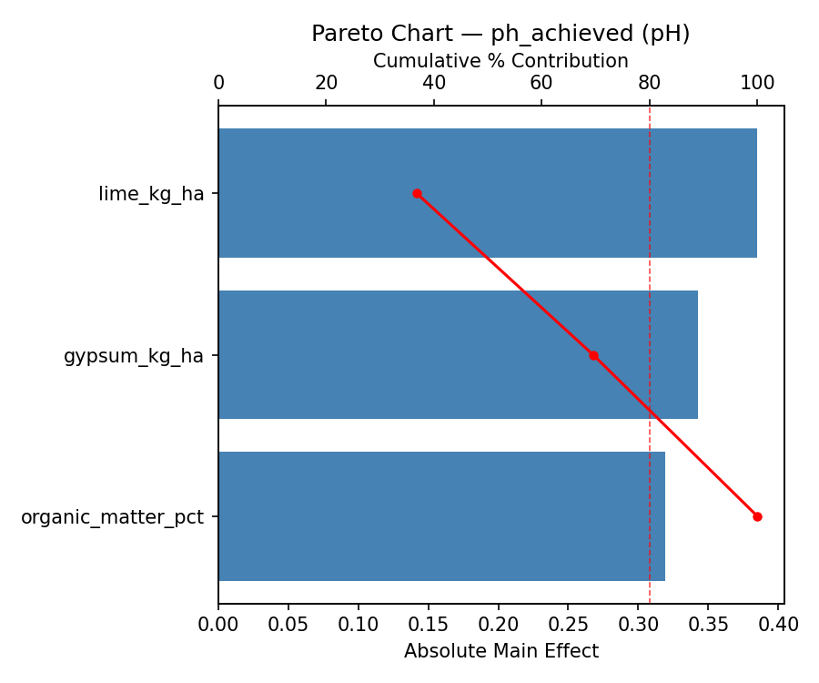
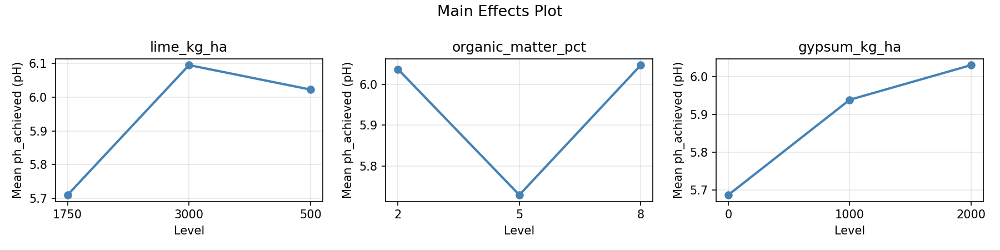
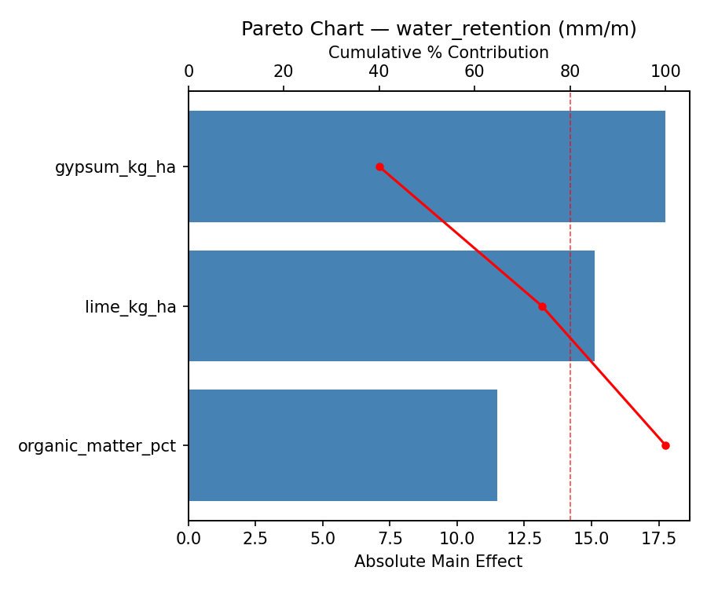
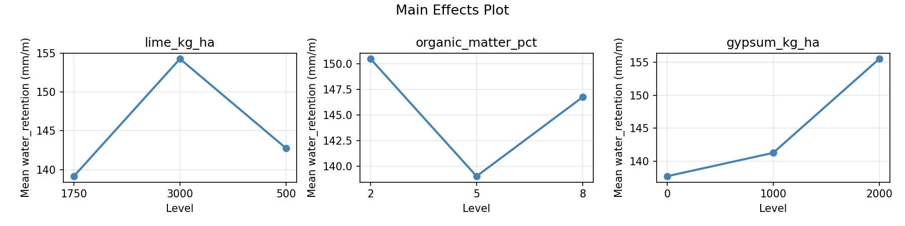
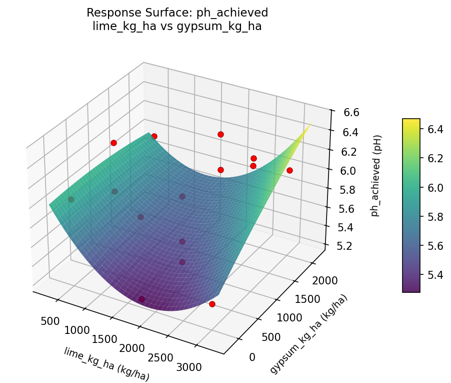
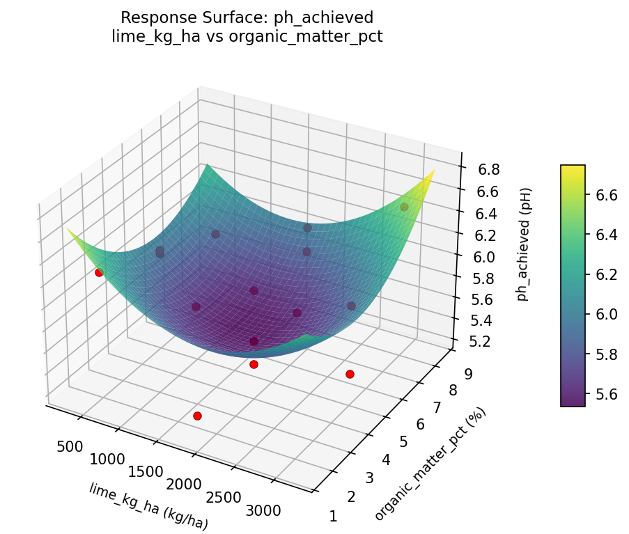
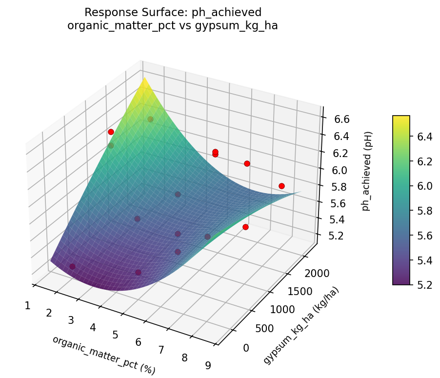
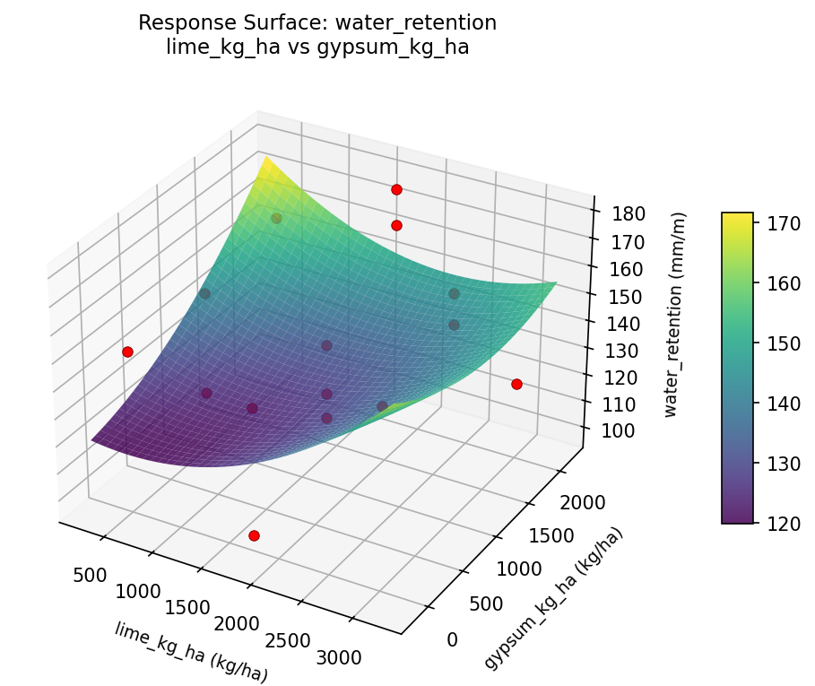
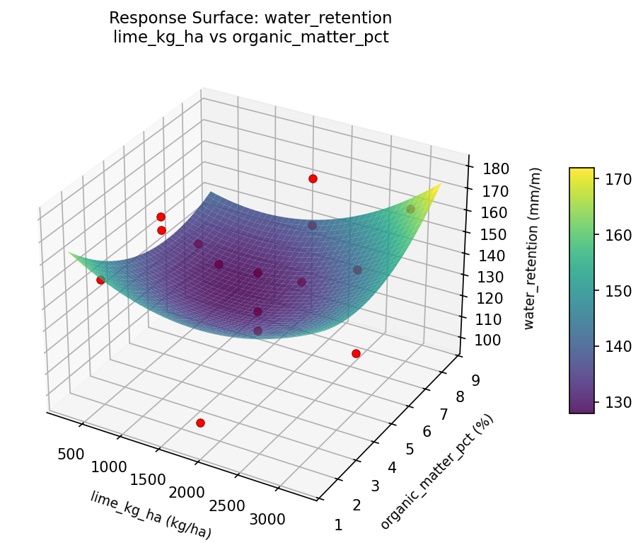
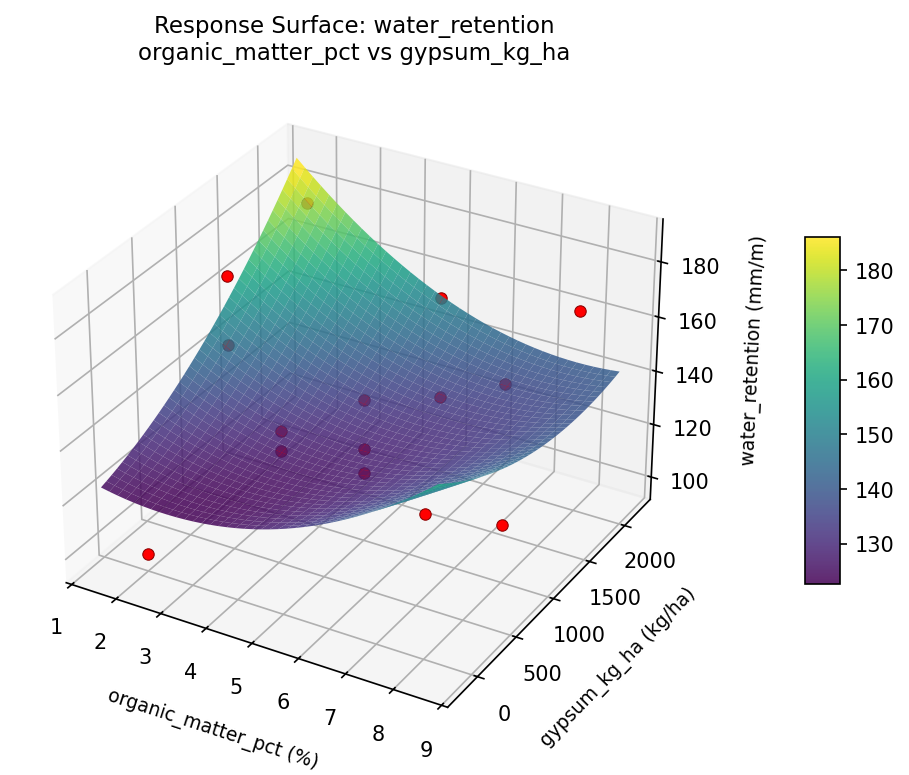

Summary
This experiment investigates soil amendment blend. Box-Behnken design to optimize soil pH and water retention by tuning lime application, organic matter addition, and gypsum rate.
The design varies 3 factors: lime kg ha (kg/ha), ranging from 500 to 3000, organic matter pct (%), ranging from 2 to 8, and gypsum kg ha (kg/ha), ranging from 0 to 2000. The goal is to optimize 2 responses: ph achieved (pH) (maximize) and water retention (mm/m) (maximize). Fixed conditions held constant across all runs include soil type = clay_loam, initial ph = 5.2.
A Box-Behnken design was chosen because it efficiently fits quadratic models with 3 continuous factors while avoiding extreme corner combinations — requiring only 15 runs instead of the 8 needed for a full factorial at two levels.
Quadratic response surface models were fitted to capture potential curvature and factor interactions. The RSM contour plots below visualize how pairs of factors jointly affect each response.
Key Findings
For ph achieved, the most influential factors were organic matter pct (64.8%), gypsum kg ha (24.5%), lime kg ha (10.7%). The best observed value was 6.5 (at lime kg ha = 1750, organic matter pct = 2, gypsum kg ha = 0).
For water retention, the most influential factors were organic matter pct (53.4%), gypsum kg ha (28.4%), lime kg ha (18.3%). The best observed value was 179.0 (at lime kg ha = 3000, organic matter pct = 8, gypsum kg ha = 1000).
Recommended Next Steps
- Run confirmation experiments at the predicted optimal settings to validate the model.
- Consider whether any fixed factors should be varied in a future study.
Experimental Setup
Factors
| Factor | Low | High | Unit |
|---|
lime_kg_ha | 500 | 3000 | kg/ha |
organic_matter_pct | 2 | 8 | % |
gypsum_kg_ha | 0 | 2000 | kg/ha |
Fixed: soil_type = clay_loam, initial_ph = 5.2
Responses
| Response | Direction | Unit |
|---|
ph_achieved | ↑ maximize | pH |
water_retention | ↑ maximize | mm/m |
Configuration
{
"metadata": {
"name": "Soil Amendment Blend",
"description": "Box-Behnken design to optimize soil pH and water retention by tuning lime application, organic matter addition, and gypsum rate"
},
"factors": [
{
"name": "lime_kg_ha",
"levels": [
"500",
"3000"
],
"type": "continuous",
"unit": "kg/ha"
},
{
"name": "organic_matter_pct",
"levels": [
"2",
"8"
],
"type": "continuous",
"unit": "%"
},
{
"name": "gypsum_kg_ha",
"levels": [
"0",
"2000"
],
"type": "continuous",
"unit": "kg/ha"
}
],
"fixed_factors": {
"soil_type": "clay_loam",
"initial_ph": "5.2"
},
"responses": [
{
"name": "ph_achieved",
"optimize": "maximize",
"unit": "pH"
},
{
"name": "water_retention",
"optimize": "maximize",
"unit": "mm/m"
}
],
"settings": {
"operation": "box_behnken",
"test_script": "use_cases/103_soil_amendment/sim.sh"
}
}
Experimental Matrix
The Box-Behnken Design produces 15 runs. Each row is one experiment with specific factor settings.
| Run | lime_kg_ha | organic_matter_pct | gypsum_kg_ha |
|---|
| 1 | 1750 | 2 | 0 |
| 2 | 1750 | 5 | 1000 |
| 3 | 3000 | 5 | 2000 |
| 4 | 3000 | 5 | 0 |
| 5 | 1750 | 5 | 1000 |
| 6 | 1750 | 5 | 1000 |
| 7 | 500 | 5 | 2000 |
| 8 | 3000 | 2 | 1000 |
| 9 | 1750 | 2 | 2000 |
| 10 | 3000 | 8 | 1000 |
| 11 | 500 | 5 | 0 |
| 12 | 1750 | 8 | 2000 |
| 13 | 500 | 2 | 1000 |
| 14 | 500 | 8 | 1000 |
| 15 | 1750 | 8 | 0 |
Step-by-Step Workflow
1
Preview the design
$ python doe.py info --config use_cases/103_soil_amendment/config.json
2
Generate the runner script
$ python doe.py generate --config use_cases/103_soil_amendment/config.json \
--output use_cases/103_soil_amendment/results/run.sh --seed 42
3
Execute the experiments
$ bash use_cases/103_soil_amendment/results/run.sh
4
Analyze results
$ python doe.py analyze --config use_cases/103_soil_amendment/config.json
5
Get optimization recommendations
$ python doe.py optimize --config use_cases/103_soil_amendment/config.json
6
Multi-objective optimization
With 2 competing responses, use --multi to find the best compromise via Derringer–Suich desirability.
$ python doe.py optimize --config use_cases/103_soil_amendment/config.json --multi
7
Generate the HTML report
$ python doe.py report --config use_cases/103_soil_amendment/config.json \
--output use_cases/103_soil_amendment/results/report.html
Features Exercised
| Feature | Value |
|---|
| Design type | box_behnken |
| Factor types | continuous (all 3) |
| Arg style | double-dash |
| Responses | 2 (ph_achieved ↑, water_retention ↑) |
| Total runs | 15 |
Analysis Results
Generated from actual experiment runs using the DOE Helper Tool.
Response: ph_achieved
Top factors: organic_matter_pct (64.8%), gypsum_kg_ha (24.5%), lime_kg_ha (10.7%).
Pareto Chart

Main Effects Plot

Response: water_retention
Top factors: organic_matter_pct (53.4%), gypsum_kg_ha (28.4%), lime_kg_ha (18.3%).
Pareto Chart

Main Effects Plot

Response Surface Plots
3D surfaces fitted with quadratic RSM. Red dots are observed data points.
ph achieved lime kg ha vs gypsum kg ha

ph achieved lime kg ha vs organic matter pct

ph achieved organic matter pct vs gypsum kg ha

water retention lime kg ha vs gypsum kg ha

water retention lime kg ha vs organic matter pct

water retention organic matter pct vs gypsum kg ha

Multi-Objective Optimization
When responses compete, Derringer–Suich desirability finds the best compromise.
Each response is scaled to a 0–1 desirability, then combined via a weighted geometric mean.
Overall Desirability
D = 1.0000
Per-Response Desirability
| Response | Weight | Desirability | Predicted | Dir |
|---|
ph_achieved |
1.0 |
|
6.66 1.0000 6.66 pH |
↑ |
water_retention |
1.5 |
|
183.48 1.0000 183.48 mm/m |
↑ |
Recommended Settings
| Factor | Value |
|---|
lime_kg_ha | 3000 kg/ha |
organic_matter_pct | 3.2 % |
gypsum_kg_ha | 2000 kg/ha |
Source: from RSM model prediction
Trade-off Summary
Sacrifice = how much worse than single-objective best.
| Response | Predicted | Best Observed | Sacrifice |
|---|
water_retention | 183.48 | 179.00 | -4.48 |
Top 3 Runs by Desirability
| Run | D | Factor Settings |
|---|
| #12 | 0.8687 | lime_kg_ha=3000, organic_matter_pct=5, gypsum_kg_ha=0 |
| #3 | 0.8496 | lime_kg_ha=3000, organic_matter_pct=5, gypsum_kg_ha=2000 |
Model Quality
| Response | R² | Type |
|---|
water_retention | 0.8956 | quadratic |
Full Multi-Objective Output
============================================================
MULTI-OBJECTIVE OPTIMIZATION
Method: Derringer-Suich Desirability Function
============================================================
Overall desirability: D = 1.0000
Response Weight Desirability Predicted Direction
---------------------------------------------------------------------
ph_achieved 1.0 1.0000 6.66 pH ↑
water_retention 1.5 1.0000 183.48 mm/m ↑
Recommended settings:
lime_kg_ha = 3000 kg/ha
organic_matter_pct = 3.2 %
gypsum_kg_ha = 2000 kg/ha
(from RSM model prediction)
Trade-off summary:
ph_achieved: 6.66 (best observed: 6.50, sacrifice: -0.16)
water_retention: 183.48 (best observed: 179.00, sacrifice: -4.48)
Model quality:
ph_achieved: R² = 0.7057 (quadratic)
water_retention: R² = 0.8956 (quadratic)
Top 3 observed runs by overall desirability:
1. Run #10 (D=0.9076): lime_kg_ha=500, organic_matter_pct=5, gypsum_kg_ha=0
2. Run #12 (D=0.8687): lime_kg_ha=3000, organic_matter_pct=5, gypsum_kg_ha=0
3. Run #3 (D=0.8496): lime_kg_ha=3000, organic_matter_pct=5, gypsum_kg_ha=2000
Full Analysis Output
=== Main Effects: ph_achieved ===
Factor Effect Std Error % Contribution
--------------------------------------------------------------
organic_matter_pct 0.7625 0.1051 64.8%
gypsum_kg_ha 0.2882 0.1051 24.5%
lime_kg_ha 0.1254 0.1051 10.7%
=== ANOVA Table: ph_achieved ===
Source DF SS MS F p-value
-----------------------------------------------------------------------------
lime_kg_ha 2 0.0431 0.0216 0.458 0.6482
organic_matter_pct 2 1.2403 0.6202 13.167 0.0029
gypsum_kg_ha 2 0.2370 0.1185 2.516 0.1420
Lack of Fit 6 0.7056 0.1176 2.497 0.3133
Pure Error 2 0.0942 0.0471
Error 8 0.7998 0.0471
Total 14 2.3204 0.1657
=== Summary Statistics: ph_achieved ===
lime_kg_ha:
Level N Mean Std Min Max
------------------------------------------------------------
1750 7 5.9329 0.4784 5.2300 6.5000
3000 4 5.9200 0.3454 5.4500 6.2700
500 4 5.8075 0.4266 5.2300 6.2200
organic_matter_pct:
Level N Mean Std Min Max
------------------------------------------------------------
2 4 6.2100 0.2692 5.8500 6.5000
5 7 5.9729 0.3009 5.4500 6.4300
8 4 5.4475 0.3262 5.2300 5.9200
gypsum_kg_ha:
Level N Mean Std Min Max
------------------------------------------------------------
0 4 5.8275 0.2906 5.4100 6.0400
1000 7 6.0257 0.3889 5.2300 6.4300
2000 4 5.7375 0.5546 5.2300 6.5000
=== Main Effects: water_retention ===
Factor Effect Std Error % Contribution
--------------------------------------------------------------
organic_matter_pct 40.0000 6.2586 53.4%
gypsum_kg_ha 21.2500 6.2586 28.4%
lime_kg_ha 13.6786 6.2586 18.3%
=== ANOVA Table: water_retention ===
Source DF SS MS F p-value
-----------------------------------------------------------------------------
lime_kg_ha 2 548.2690 274.1345 0.361 0.7081
organic_matter_pct 2 3206.5190 1603.2595 2.109 0.1839
gypsum_kg_ha 2 1083.2690 541.6345 0.712 0.5191
Lack of Fit 6 1867.0095 311.1683 0.409 0.8326
Pure Error 2 1520.6667 760.3333
Error 8 3387.6762 760.3333
Total 14 8225.7333 587.5524
=== Summary Statistics: water_retention ===
lime_kg_ha:
Level N Mean Std Min Max
------------------------------------------------------------
1750 7 150.4286 21.0227 120.0000 175.0000
3000 4 140.5000 15.9687 117.0000 151.0000
500 4 136.7500 37.6862 98.0000 179.0000
organic_matter_pct:
Level N Mean Std Min Max
------------------------------------------------------------
2 4 164.7500 11.8708 150.0000 179.0000
5 7 143.4286 21.2670 113.0000 175.0000
8 4 124.7500 25.0516 98.0000 158.0000
gypsum_kg_ha:
Level N Mean Std Min Max
------------------------------------------------------------
0 4 158.0000 6.1644 151.0000 166.0000
1000 7 140.4286 30.4240 98.0000 179.0000
2000 4 136.7500 22.1717 113.0000 164.0000
Optimization Recommendations
=== Optimization: ph_achieved ===
Direction: maximize
Best observed run: #3
lime_kg_ha = 1750
organic_matter_pct = 2
gypsum_kg_ha = 0
Value: 6.5
RSM Model (linear, R² = 0.0875, Adj R² = -0.1614):
Coefficients:
intercept +5.8960
lime_kg_ha -0.0100
organic_matter_pct +0.0450
gypsum_kg_ha -0.1525
RSM Model (quadratic, R² = 0.7397, Adj R² = 0.2712):
Coefficients:
intercept +5.9067
lime_kg_ha -0.0100
organic_matter_pct +0.0450
gypsum_kg_ha -0.1525
lime_kg_ha*organic_matter_pct +0.2600
lime_kg_ha*gypsum_kg_ha -0.4050
organic_matter_pct*gypsum_kg_ha +0.0000
lime_kg_ha^2 -0.2883
organic_matter_pct^2 +0.2517
gypsum_kg_ha^2 +0.0167
Curvature analysis:
lime_kg_ha coef=-0.2883 concave (has a maximum)
organic_matter_pct coef=+0.2517 convex (has a minimum)
gypsum_kg_ha coef=+0.0167 negligible curvature
Notable interactions:
lime_kg_ha*gypsum_kg_ha coef=-0.4050 (antagonistic)
Predicted optimum (from quadratic model, at observed points):
lime_kg_ha = 1750
organic_matter_pct = 8
gypsum_kg_ha = 0
Predicted value: 6.3725
Surface optimum (via L-BFGS-B, quadratic model):
lime_kg_ha = 3000
organic_matter_pct = 8
gypsum_kg_ha = 0
Predicted value: 6.7392
Model quality: Good fit — general trends are captured, some noise remains.
Factor importance:
1. lime_kg_ha (effect: 0.3, contribution: 33.8%)
2. organic_matter_pct (effect: 0.3, contribution: 33.7%)
3. gypsum_kg_ha (effect: 0.3, contribution: 32.5%)
=== Optimization: water_retention ===
Direction: maximize
Best observed run: #12
lime_kg_ha = 3000
organic_matter_pct = 8
gypsum_kg_ha = 1000
Value: 179.0
RSM Model (linear, R² = 0.1309, Adj R² = -0.1061):
Coefficients:
intercept +144.1333
lime_kg_ha +2.2500
organic_matter_pct +7.1250
gypsum_kg_ha -8.8750
RSM Model (quadratic, R² = 0.6646, Adj R² = 0.0609):
Coefficients:
intercept +142.6667
lime_kg_ha +2.2500
organic_matter_pct +7.1250
gypsum_kg_ha -8.8750
lime_kg_ha*organic_matter_pct +18.2500
lime_kg_ha*gypsum_kg_ha -19.2500
organic_matter_pct*gypsum_kg_ha +9.5000
lime_kg_ha^2 -10.0833
organic_matter_pct^2 +14.1667
gypsum_kg_ha^2 -1.3333
Curvature analysis:
organic_matter_pct coef=+14.1667 convex (has a minimum)
lime_kg_ha coef=-10.0833 concave (has a maximum)
gypsum_kg_ha coef=-1.3333 concave (has a maximum)
Notable interactions:
lime_kg_ha*gypsum_kg_ha coef=-19.2500 (antagonistic)
lime_kg_ha*organic_matter_pct coef=+18.2500 (synergistic)
organic_matter_pct*gypsum_kg_ha coef=+9.5000 (synergistic)
Predicted optimum (from quadratic model, at observed points):
lime_kg_ha = 3000
organic_matter_pct = 8
gypsum_kg_ha = 1000
Predicted value: 174.3750
Surface optimum (via L-BFGS-B, quadratic model):
lime_kg_ha = 3000
organic_matter_pct = 8
gypsum_kg_ha = 0
Predicted value: 191.6667
Model quality: Moderate fit — use predictions directionally, not precisely.
Factor importance:
1. organic_matter_pct (effect: 22.1, contribution: 41.6%)
2. gypsum_kg_ha (effect: 17.8, contribution: 33.4%)
3. lime_kg_ha (effect: 13.2, contribution: 24.9%)